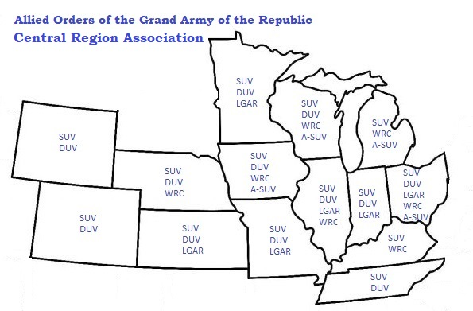

HISTORY
The Union veterans after the Civil War founded the Grand Army of the Republic. Other organizations followed but only a few were considered kindred organizations. These include: Daughters of Union Veterans of the Civil War, Women's Relief Corps, Ladies of the Grand Army of the Republic, Sons of Union Veterans of the Civil War (SUVCW) and Auxiliary to Sons of Union Veterans of the Civil War. These groups often held annual encampments near where the Grand Army of the Republic held theirs and all felt a need to coordinate the efforts of the various organizations.


The Central Region was founded with the purpose of "bringing the Departments closer together in the true spirit for which they were organized, and to receive information and inspiration for renewed efforts" when participants returned home. Each Camp in the Region was asked to send at least one representative and both Camp and Auxiliary and Department and Past Department officers were encouraged to attend.


Dwindling membership and other organizational concerns following World War I led some Sons of Union Veterans of the Civil War departments to form regional associations by the mid-1930s. Many of these departments had already experienced success with similar organizations on a much smaller scale within their own boundaries. Decades earlier, camps in a particular geographical area had found it advantageous to form districts or associations.
In 1940, a "Tri-state Conference" was held in LaCrosse, Wisconsin. By 1941, the "Upper Mississippi Valley Region," as it was then called, included four departments: Minnesota, Wisconsin, Illinois and Iowa. By the 1950s, as highways were improved, freeways were built and travel became more popular, the departments of Indiana, Michigan, Ohio, and Colorado were included and the association became known as the "Central Region." In 1960, the departments of Missouri and Kansas were welcomed into the Central Region.
In 1959, the upcoming Civil War Centennial caused the Central Region to re-examine its purpose. Under the leadership of Wisconsin's Department Commander, Thomas L.W. Johnson, over the next 35 years, the Central Region Conference included a round table discussion on a Civil War topic or an issue affecting the Allied Orders or both, such as: "The Challenge of Patriotism," "The State of Our Order," "Preserving Historic Sites," were discussed, as were "The Civil War in Indiana," " Gen. Grant Before and After the Civil War," and "The GAR in Wisconsin." A Saturday morning tour of an historic site and a Saturday evening banquet with a guest speaker became regular features.
By the early 1990s, a renewed sense of purpose and a growing membership were signaling changes in the SUVCW. A new general of members was being elevated to leadership positions within the department and national organizations. Some of these members were effective leaders in the Central Region and the conference program took a slightly new direction. In 1993, Michigan's J. Douglas Park adapted the National Ceremonies and Order of Business used during the Central Region Conference. In 1997, "how to" seminars and presentations started to appear in the Conference program with regular frequency. These were aimed at strengthening the basic knowledge and skills of those in the region's camps and auxiliaries. The following year the Conference voted to create a committee for training and steering the Region Conference into the next century.
Today, the Central Region is one of only two surviving regional associations within the Allied Orders. The other is the Eastern Regional Association.